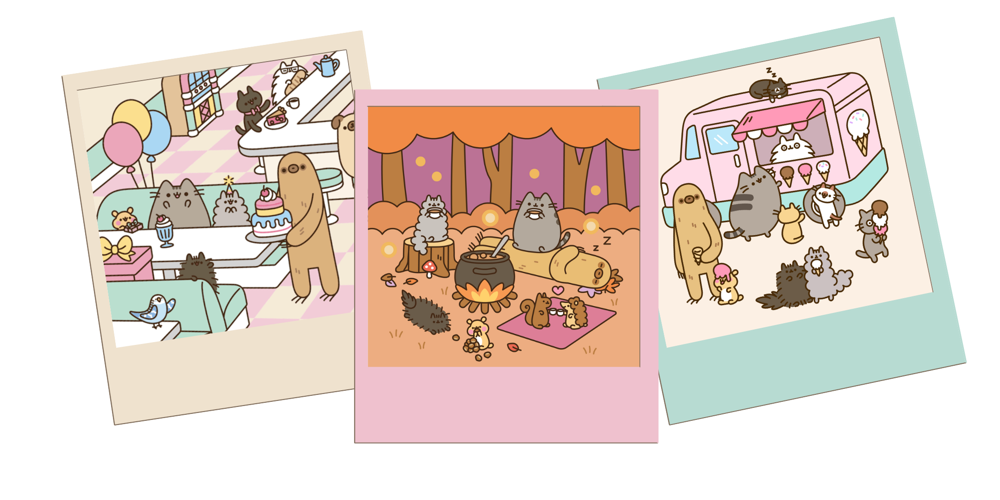

About
Pusheen is a tubby tabby cat who brings smiles and laughter to people all around the world. She became famous through her animated comics and GIFs posted on Pusheen.com, as well as through her widely used animated stickers on Facebook, Instagram, iMessage, and other platforms.
Claire Belton is the artist and entrepreneur that created Pusheen the Cat. She is based in Chicago and spends her time petting cats, drawing cats and pursuing cat-related endeavors.
If you'd like to learn more about Pusheen the Cat as well as browse the online shop, you can do so here.
Pusheen
- Name: Pusheen
- Gender: Girl
- Birthday: February 18th
- Best Feature: Toes look like beans
- Bio: Pusheen is a sweet, curious, lazy, & plump tabby cat that loves to have adventures. Her hobbies include blogging, snacking, taking naps, and being a unicorn/mermaid/dinosaur/various wild animals/a trio of pastel aliens on occasion.
Pucheen's Friends
Stormy
Stormy is Pusheen’s little sister and best friend. Her hobbies include adventuring, intellectual pursuits, and grooming herself. She idolizes Pusheen and does her best to be a comparable role model to their little brother, Pip.
Pip
Pip is Pusheen and Stormy’s little brother. He’s adventurous, fearless, and frequently causes trouble. His favorite hobby is following his big sisters around, copying them, asking them questions, and sliding his paws under any door that separates them from him. Wants to be a wolf when he grows up.
Bo
Bo is a small blue parakeet with big dreams. She aspires to be a world renowned interior designer and to find her soulmate. Her hobbies include decorating the homes of plastic fashion dolls and harboring secret crushes.
Sloth
Sloth is thoughtful, quiet, and takes his time in all things. He and Pusheen enjoy lazing around together. His hobbies include yoga and looking out windows. Although his facial expression doesn’t vary much, his friends don’t have any trouble understanding him. He’s always there to support the ones he cares about. Like, physically, with his arms.
Cheek
Cheek is a small yellow hamster with a rosy blush. His favorite hobby is baking in his miniature kitchen and then sharing the treats with his larger animal friends. He hasn’t noticed that his creations are bite-sized, and everyone’s too nice to point it out.
